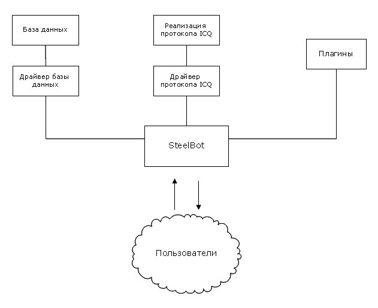

Что такое SteelBot?В наше время IM-сети стали одним из самых популярных средств общения в интернете. Каждый день миллионы сообщений проходят по сетям ICQ, Jabber и других мессенджеров. IM-клиенты работают на мобильниках, КПК, позволяя быть "онлайн" везде и всегда.Помимо общения, IM-протоколы также являются прекрасным средством для получения всевозможной информации, от последних новостей до энциклопедических статей. Это стало возможно благодаря ботам - программам, работающим по IM-протоколам и позволяющим пользователям получать любую информацию, посылая команды ботам. SteelBot является программой-ботом с открытым исходным кодом, позволяющим пользователям получать всевозможную информацию по ICQ. Ниже вы можете ознакомиться с возможностями SteelBot. Возможности SteelBotБлагодаря гибкой функциональности плагинов SteelBot может практически все :)Вот краткий список потенциальных возможностей SteelBot: В качестве базы данных бот может использовать любую основанную на SQL БД (например, в качестве текстовой - PHP-TextDB API). В качестве библиотеки для соединения с сервером ICQ - любую библиотеку, которая предоставляет минимальный ICQ-функционал - подключение к серверу и прием/отправка сообщений ( По умолчанию бот использует библиотеку WebICQPro) Для того, чтобы SteelBot научился работать с неизвестной БД или библиотекой ICQ, нужно написать соответствующий драйвер - класс, который реализует универсальный интерфейс работы с БД или ICQ для бота. Архитектура SteelBotSteelBot использует 3 компонента для работы: базу данных для хранения служебной и основной информации, драйвер протокола ICQ, который позволяет боту подключаться к ICQ-серверу, и плагины - файлы, которые содержат команды бота и динамически загружаются при запуске SteelBot. SteelBot использует универсальные интерфейсы для работы с базой данных и протоколом ICQ, поэтому последние могут быть заменены на другие, помимо тех, что бот использует по умолчанию. Также при необходимости использование базы данных можно отключить. Плагин для SteelBot - один или несколько файлов, которые содержат команды бота или выполняют определенную полезную задачу. При запуске SteelBot просматривает директорию с плагинами и автоматически загружает все доступные плагины. SteelBot использует событийный механизм. Это значит, что каждое явление в работе бота, будь то подключение к серверу, прием/отправка сообщения, ввод определенной команды или сигнал таймера, являются событиями, которые могут быть обработаны в плагинах. Плагины также могут создавать свои собственные события, с помощью которых можно информировать другие плагины о произошедших изменениях в боте. |